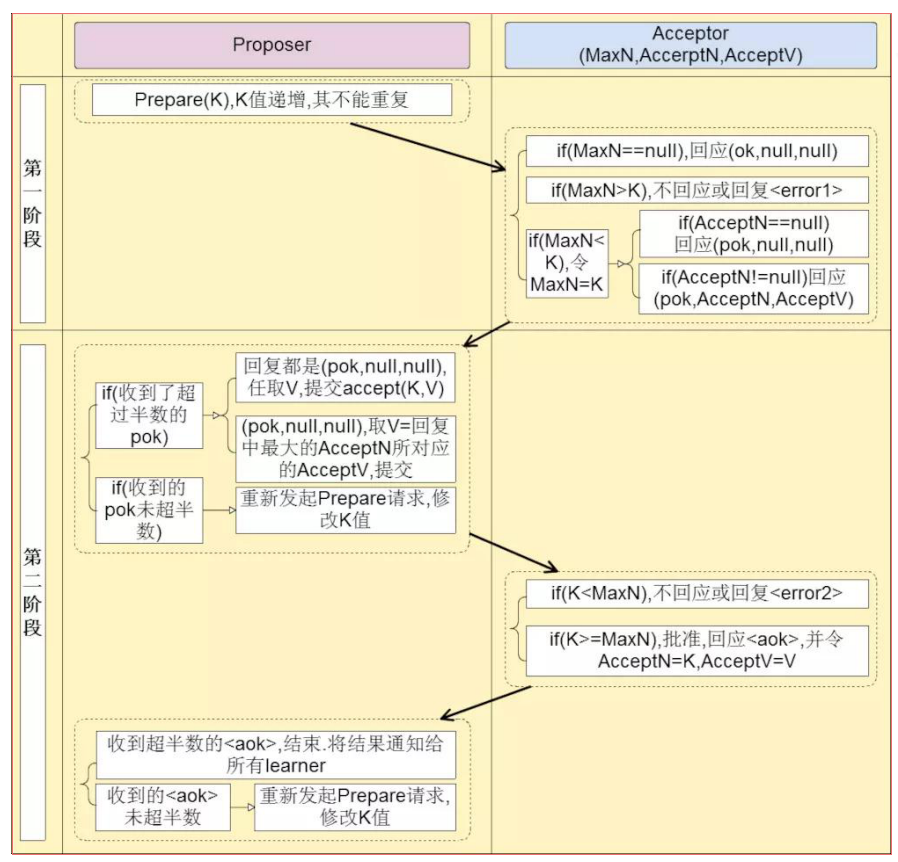
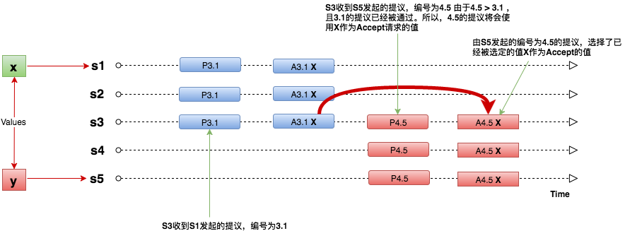
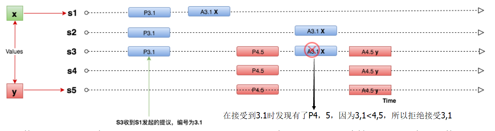
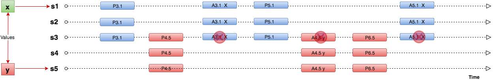

1.paxos应用场景
没有恶意节点，但可能由于网络延迟或crash导致某些节点不能正常收到消息。
paxos要解决的问题是：
将所有节点都写入同一个值，且被写入后不再更改。
paxos需要满足的两个条件
2.节点种类
- proposers:提出提案，提案信息包括提案编号和提议的value
- acceptor:收到提案后可以接受提案，若提案获得多数派的acceptor的接受，则提案被称为被批准（chosen)
- learners: 只能“学习”chosen的提案
在paxos算法中，有以下几点需要注意：
- value只有在被proposers提出后才能被批准（未被批准的决议称为“提案”proposal)
- 在一次Paoxs算法执行实例中，只chosen一个value
- learners只能学习chosen的value
3.算法的基本理论
(这部分非常难以理解，可以先看后面的章节，再回过来理解这一章的内容)
主要有3个约束
条件1：Acceptor必须accept它接收到的第一个决议
条件2：如果一个提案（n,v)chosen，那么之后所有chosen的提案（编号更高）包含的value都是v。
acceptor有多个，proposer向一组acceptor提出提案（提案是< 编号，value >对）。
- promise: Acceptor对proposer承诺，如果没有比你提出的提案的编号更大的提案，我就accpet你提出的提案
- accept: acceptor没有发现比之前的提案编号更大的提案，就会accept之前的提案
- chosen: 当多数的acceptor都accept一个提案时，那么该提案就是chosen的
条件1：Acceptor必须accept它接收到的第一个决议
但是条件1不完备。假如有两个提案提出，一半acceptor先收到提案1然后accept了，一半acceptor先收到提案2然后accept了，无法达成多数派，就无法达成决议。
条件1强调了第一个提出的提案被promise。但是还未考虑第二个。
那么条件2还需要考虑：
1.如何解决条件1中无法形成多数派的情况
2.第二个提案如何选择
条件2：如果一个提案（n,v)chosen，那么之后所有chosen的提案（编号更高）包含的value都是v。
条件2讨论的是一旦chosen，之后的选择应该不变。
为了保证每次选出一个value,条件2规定在一个value被选出的情况下，如果还有其他的proposer提交value，那之前chosen的value应该跟前一个一致，就是在事实上已经选定一个value时，之后的proposer不能提出不一样的value。条件2称为“safety property ”
下面的讨论都基于“If a proposal with value v is chosen”,如何保证”then every higher-numbered proposal is chosen has value v”
具体实现通过逐步增强条件的方式
1.对整个结果提出要求（p2)
2.对Acceptor提出要求(p2a)
3.对Proposer提出要求(p2b)
4.对acceptor与proposer同时提出要求(p2c)
具体如下：
p2a:If a proposal with value v is chosen,then every higher-numbered proposal issued by any proposer has value v
p2a是在限制proposer，如果对proposer有了这样的限制，那么当然acceptor的限制也能被满足，因为限制了proposer必须提交value v，也就保证了P1。
但是对于p2b难以实现，因为多个proposer可以提交任意value的proposal，无法限制proposer不能提交某个value，所以需要找到与p2b等价的约束：
p2c:For any v and n ,if a proposal with value v and number n is issued,then there is a set S consisting of a majority of acceptors such that either :
(a)no acceptor in S has accepted any proposal numbered less than n,or
(b)v is the value of the highest-numbered proposal among all proposals numbered less than n accepted by the acceptors in S
结果R：“:For any v and n ,if a proposal with value v and number n is issued”
条件C：“then there is a set S consisting of a majority of acceptors such that either ……”
如果一个编号为n的提案具有value v,要么存在一个多数派，那么他们中所有acceptor都没有accept编号小于n的提案，要么他们已经接受(accept)的所有编号小于n的提案中最大的那个提案具有value v。
证明：条件C满足，那么结果R成立。
(a)no acceptor in S has accepted any proposal numbered less than n
那么n是S中的第一个提案，根据条件1,必须接受，所以结果R成立。(b)v is the value of the highest-numbered proposal among all proposals numbered less than n accepted by the acceptors in S
假设编号为n的提案具有value X被选择，肯定存在一个多数派集合C，其中每个acceptor都接受了value X,集合S中都接受了value V,因为S,C都是多数派，所以必然存在一个公共的成员集合U，即接受了X又接受V，为了保证选择的唯一性，导出矛盾从而推翻假设，证明必然有X=V。
4.算法描述
分成两阶段进行：prepare和accept
phase1:prepare
- Proposer选择一个proposal编号n，向acceptor发送编号为n的prepare请求
- 如果Acceptor接收到的prepare请求的编号大于它已经回应过的prepare请求，它就回应已经accept的编号最高的议案（如果有的话），并承诺不再回应任何编号小于n的议案。
phase2:accept - Proposer:如果收到了多数acceptor对prepare请求（编号为n）的回应，它就像这些acceptor发送提案(n,v),其中v是所有回应中编号最高的议案的value。

5.具体情况分析
在整个paxos两阶段过程中，有三个特别重要的值 : AcceptedN,AcceptedV,MaxN。每次发起提议都会用到这三个值，并根据这三个值的不同情况做不同的判定。所以，这三个值每次产生之后都需要持久化到磁盘上。这样，才能在服务器restart或者故障情况下，能够正确的执行paxos的二阶段来保证强一致性.
整个Lifecycle，每次去提交一个值(Accept)之前，需要先检查集群中大多数节点是否之前已经通过对这个值的提议。一旦有某一个节点反馈这个值之前被接受，那我们认为之前对这个值发起过提议，并被某个节点接受。因此，选择返回的提议号最大的值替换当前的值，也就是最后一次Accept的值来作为当前发起Accept 请求的值。
接下来，列举几种可能出现的情况，并看看Basic Paxos 协议是如何来进行实际处理的。
1.如果一个提议发起之前，对应的值已经被大多数Accept，那么这个提议必须使用已经被Accept的值。
2.如果之前提议的值已经被部少分节点Accept，但是没有chosen。新的提议可以看到之前少部分节点Accept的值。则这个Accept的值会作为新的提议Accept请求的值。

在S5发起编号为4.5的提议之后，Accept之前，S1的Accept 请求并未被大多数接受。此时，只有S3接受了S1编号为3.1的Accept 请求。在这种情况下，S5的Parepare提议返回AcceptValue为X并将X作为Accept的请求值进行提交。3.如果之前的提议被部分节点Accept，但是没有chosen。且新的提议看不到之前提议的Accept的值。则新的提议的Accept的请求会使用自己的值。

S1的编号为3.1的Accept请求到了S3服务器，但是S3服务器接收到Accept请求后，发现已经存在其他的Prepare请求，且编号为4.5 > 3.1,所以拒绝了S1的Accept的请求。所以S1收到S3返回的minProposal,发现minProposal（4.5） > 3.1，所以调整自己的Proposal Number，重新发起提议。4.出现livelock

每次服务器接收到Accept请求后，发现有比Accept 编号大的提议已经Prepare了，所以Proposer（这里为S1,S5）不断的重新发起提议。这种情况被称之为Livelock。那么，如何避免这种情况的发生呢 ？
- 每次失败后，重新发起提议前，随机delay一段时间。
- 通过Leader选举，只有Leader有权发起提议。